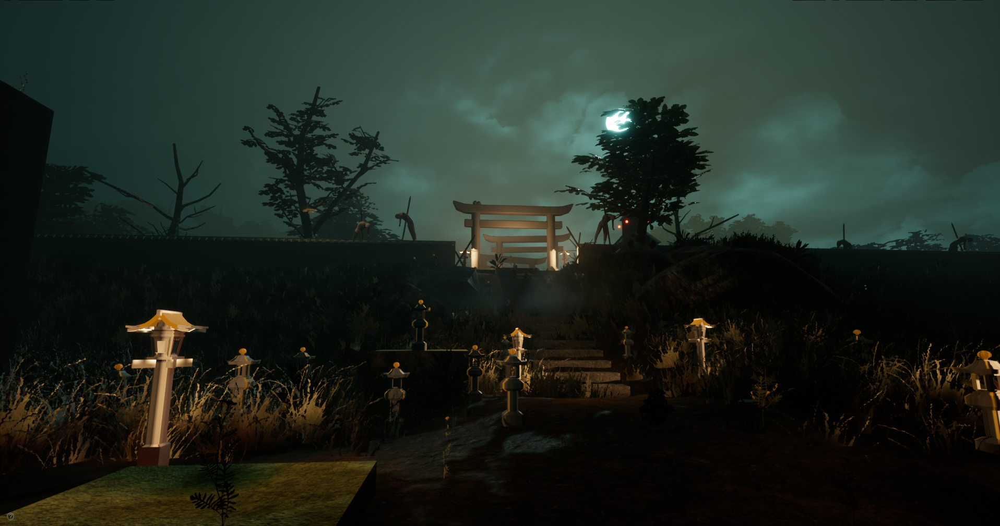
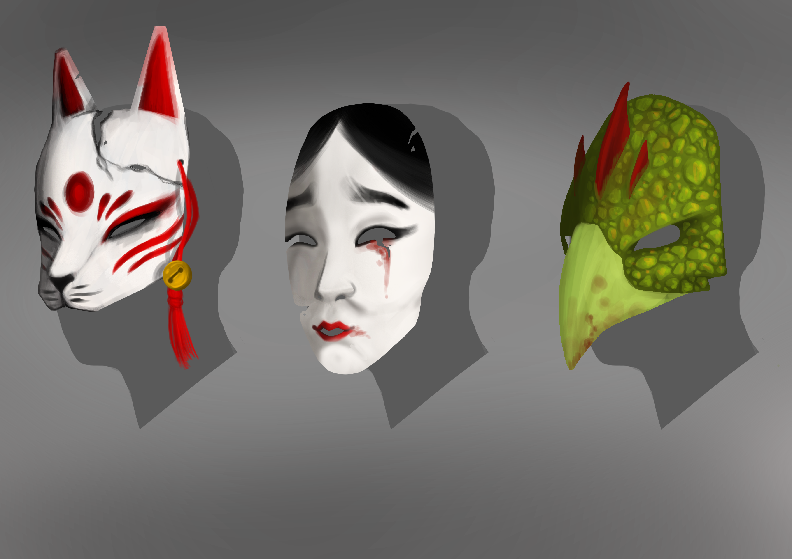
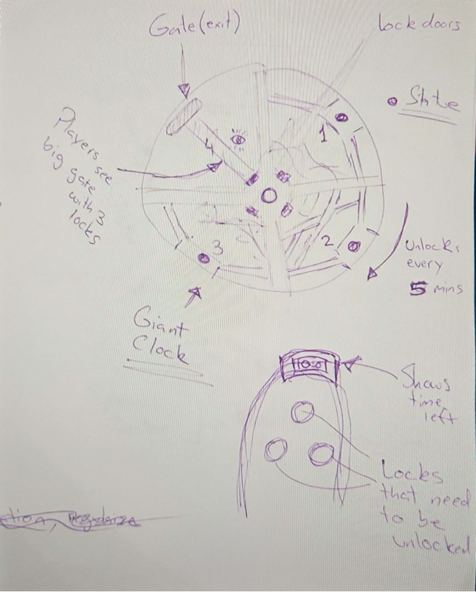
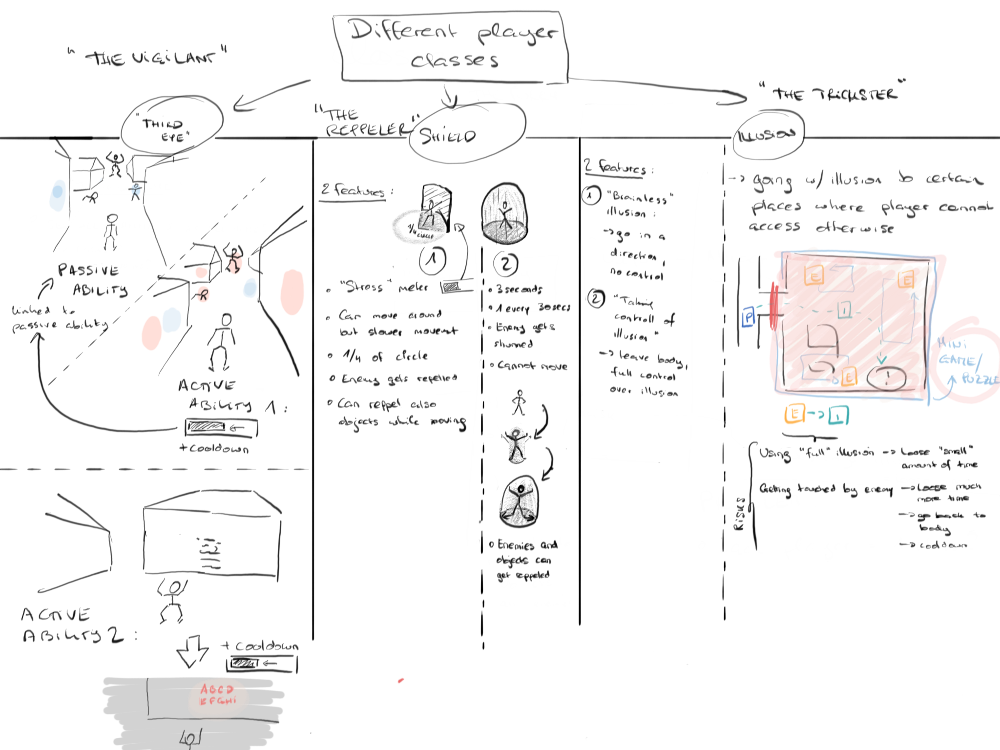

Triaed
Triaed is a psychological horror, first-person multiplayer game.
Where four people that are in the verge of death due to an accident that connects them in some way.
They all exposed to what people call “Near-death experience”, sending them into a wicked parallel version of their world.
Without any knowledge of what happened or where they are, these four individuals must find a way out before time runs out or else be trapped there forever.

My Role
During this project I worked as Lead Game Designer and Scrum Master.
I was responsible for the development of the Game Design Documentation, Flow Charts, organising Sprint Meetings and documenting the results.
I was also in charge of the communication between both programmers and artist, to ensure that both sectors well informed of each others progress.

The game orbits around player to player cooperation.
There are a 3 main classes on the game that will be given at random to force players to adapt and be able to play any of the classes.
However for private matches, players will be able to directly choose.
Each class grants the player a unique sets of abilities that will allow them to complete quests or work around obstacles.
These are:
- The Repeller
- The Trickster
- The Vigilant

Enemies will have different version of a behavioral tree and will interact differently with each player's abilities.
They will also have their own set of weaknesses and strength that players will need to exploit to win the game
Players are considered prey throughout the entirety of game;
enforced throughout the experience by giving them abilities that do not empower them,
while the displaying scenarios, atmosphere, tone/mood that oppress them.
Cameras that are close and personal. Surroundings that seem menacing and unforgiving,
as well as having creatures that will be around hunting for you and cannot be killed or vanquished.
There will be a timer that will rush players to finish the game, the timer itself will work as the player’s health bar.
Once the timer reaches 0, that player will be stuck in this world forever.
Each player will have their own timer and there will be instances in which they can add time or loose it.
For example saving a lost soul (npc with sidequests that reward players) or giving away time to a player that lost their own.
You must get out before your time reaches 0 or you will loose the game.
The GDD is kept private for future use, but feel free to contact me about any details.
The Map and Winning conditions

The map will act as a giant clock, every certain amount of time a new area will be unlock, until the last one,
being a massive gate, that the players must have collected certain ammount of keys (obtained in other areas) to open it.
After reaching the gate, players will have to fight the Gate Keeper which will be a massive entity that will try to stop them.
The players wont be able to attack the creature directly but will be able to use their surroundings and abilities to defeat it.

During this project I worked as Lead Game Designer and Scrum Master.
I was responsible for the development of the Game Design Documentation, Flow Charts, organising Sprint Meetings and documenting the results.
I was also in charge of the communication between both programmers and artist, to ensure that both sectors well informed of each others progress.
Challenges
During this project I worked as Lead Game Designer and Scrum Master.
I was responsible for the development of the Game Design Documentation, Flow Charts, organising Sprint Meetings and documenting the results.
I was also in charge of the communication between both programmers and artist, to ensure that both sectors well informed of each others progress.
Learning Outcomes
During this project I worked as Lead Game Designer and Scrum Master.
I was responsible for the development of the Game Design Documentation, Flow Charts, organising Sprint Meetings and documenting the results.
I was also in charge of the communication between both programmers and artist, to ensure that both sectors well informed of each others progress.